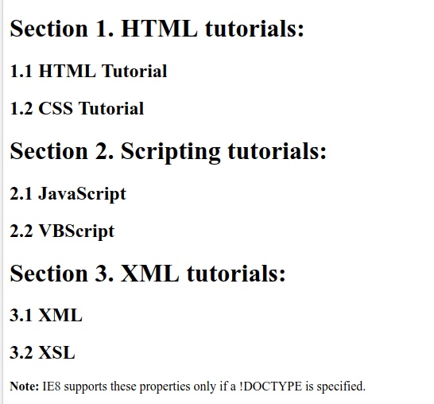
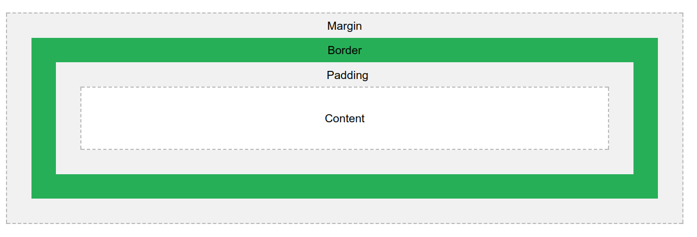

Ein CSS-Regelsatz besteht aus einem Selektor und einem Deklarationsblock. Der Selektor zeigt auf das HTML-Element, das man stylen möchte. Der Deklarationsblock enthält eine oder mehrere Deklarationen, die durch Semikolons getrennt sind. Jede Deklaration enthält einen CSS-Eigenschaftsnamen und einen Wert, der durch einen Doppelpunkt getrennt ist. Eine CSS-Deklaration endet immer mit einem Semikolon, und Deklarationsblöcke sind von geschweiften Klammern umgeben.
Selector {
Property: Value;
}
Bsp: h1 {
color: blue;
}
Wenn man Elemente mit den gleichen Stildefinitionen hat, ist es besser, die Selektoren zu gruppieren, um den Code zu minimieren. Um Gruppenselektoren zu gruppieren, trennt man jeden Selektor mit einem Komma. z.B.:
h1,h2,h3 {
color: red;
}
/* This is a single-line comment */
Farbnamen: In HTML kann eine Farbe mit einem Farbnamen angegeben werden. Diese Farben gibt es
In HTML kann eine Farbe mit einem Hexadezimalwert in dieser Form angegeben werden:
#rrggbb
Wo rr (rot), gg (grün) und bb (blau) hexadezimale Werte zwischen 00 und ff (wie dezimal 0-255) sind. Beispielsweise wird #ff0000 als rot
angezeigt, da Rot auf den höchsten Wert (ff) gesetzt ist und die anderen auf den niedrigsten Wert (00).
Der background-color Property gibt die Hintergrundfarbe eines Elements an. Syntax:
background-color: colorname;
Syntax:
background-image: url("image-url");
syntax: für horizontales Wiederholen
background-repeat: repeat-x;
Für vertikales Wiederholen x mit y ersetzen (repeat-y).
Um festzulegen, dass das Hintergrundbild fixiert werden soll (nicht mit dem Rest der Seite mitscrollen), verwendet man die Eigenschaft background-attachment.
background-attachment: fixed;
Der color Property wird verwendet, um die Farbe des Textes festzulegen. z.B.:
h1 {
color: green;
}
Der text-align Property wird verwendet, um die horizontale Ausrichtung eines Textes festzulegen. Ein Text kann links oder rechts ausgerichtet, zentriert oder justified sein.
Der text-decoration property wird verwendet, um Dekorationen im Text zu setzen oder zu entfernen.
Der text-transform property wird verwendet, um Groß- und Kleinbuchstaben in einem Text anzugeben. Es kann verwendet werden, um alles in Groß- oder Kleinbuchstaben umzuwandeln oder den ersten Buchstaben jedes Wortes großzumachen.
Die CSS font properties definieren die Schriftfamilie, die Kühnheit, die Größe und den Stil eines Textes.
Serif-Schriften haben kleine Linien an den Enden bei einigen Buchstaben.
Sans-serif Fonts haben keine Linien an den Enden der Buchstaben.
Die Schriftfamilie eines Textes wird mit dem font-family Property gesetzt. Sie sollten mehrere Fontnamen als "Fallback" -System enthalten. Wenn der Browser die erste Schrift nicht unterstützt, versucht er die nächste Schriftart und so weiter. Beginnen Sie mit der Schriftart, die Sie wollen, und enden mit einer generischen Familie, um den Browser eine ähnliche Schriftart in der generischen Familie zu wählen, wenn keine anderen Schriftarten verfügbar sind.
Anmerkung: Wenn der Name einer Schriftfamilie mehr als ein Wort ist, muss es in Anführungszeichen sein, wie zB: "Times New Roman". Mehr als eine Schriftfamilie wird in einer durch Kommas getrennten Liste angegeben. z.B.:
font-family: "Times New Roman", Times, serif;
Die Eigenschaft font-style wird hauptsächlich verwendet, um kursiven Text anzugeben. Diese Eigenschaft hat drei Werte:
font-style: italic;
Der font-size Property legt die Größe des Textes fest. Der font-size Wert kann eine absolute oder relative Größe sein.
Absolut Size:
font-size: 2.5em; /* 40px/16=2.5em */
Der font-weight Property gibt das Gewicht einer Schriftart an. (normal oder bold!).
font-weight: bold;
Links können mit jedem CSS Property gestalltet werden(z.B. color, font-family, background, etc.). Darüber hinaus können Links unterschiedlich gestylt werden, je nachdem, in welchem Zustand sie sich befinden. Die vier Linkszustände sind:
/* unvisited link */
a:link {
color: red;
}
/* visited link */
a:visited {
color: green;
}
/* mouse over link */
a:hover {
color: hotpink;
}
/* selected link */
a:active {
color: blue;
}
Ein CSS-Selektor kann mehr als einen einfachen Selektor enthalten. Zwischen den einfachen Selektoren können wir einen Kombinator einschließen. Ein Kombinator ist etwas, das die Beziehung zwischen den Selektoren erklärt. Es gibt vier verschiedene Kombinatoren in CSS3:
Der Nachkommenselektor passt zu allen Elementen, die Nachkommen eines bestimmten Elements sind. Im folgenden Beispiel werden alle <p> Elemente innerhalb von <div> Elementen ausgewählt:
div p {
background-color: yellow;
}
Der Kinderselektor wählt alle Elemente aus, die die unmittelbaren Kinder eines bestimmten Elements sind. Im folgenden Beispiel werden alle <p>-Elemente ausgewählt, die unmittelbare Kinder eines <div>-Elements sind:
div > p {
background-color: yellow;
}
Der benachbarte Geschwisterselektor wählt alle Elemente aus, die die benachbarten Geschwister eines bestimmten Elements sind. Geschwisterelemente müssen das gleiche übergeordnete Element haben, und "benachbart" bedeutet "unmittelbar nach". Im folgenden Beispiel werden alle <p> Elemente ausgewählt, die unmittelbar nach <div> Elementen platziert werden:
div + p {
background-color: yellow;
}
Der allgemeine Geschwisterselektor wählt alle Elemente aus, die Geschwister eines bestimmten Elements sind. Das folgende Beispiel wählt alle <p> Elemente, die Geschwister von <div> Elementen sind:
div ~ p {
background-color: yellow;
}
selector:pseudo-class {
property:value;
}
z.B.: Bei Links: a:active.
ul.a {
list-style-type: circle;
}
ul.b {
list-style-type: square;
}
ol.c {
list-style-type: upper-roman;
}
ol.d {
list-style-type: lower-alpha;
}
Das ul.a wird verwendet um unterschiedlichen Listen unterschiedliche Gestaltung zu geben. Im HTML-Code einfach das eingeben:
<ul class="a"> <li>Test</li> </ul>
Wobei das class="a" für den Buchstaben steht der nach dem Punkt bei ul.a kommt
ul {
list-style-image: url('sqpurple.gif');
}
Wird verwendet um ein bestimmtes Bild als Aufzählungszeichen zu verwenden.
ul {
list-style-position: inside;
}
ul {
list-style-position: outside;
}
Der list-style-position Property gibt an, ob die Listenelementmarken innerhalb oder außerhalb des Inhaltsflusses angezeigt werden sollen.
ul {
list-style-type: none;
margin: 0;
padding: 0;
}
Verwenden Sie den border Property, um Tabellenränder in CSS anzugeben.
table, th, td {
border: 1px solid black;
}
Mit dem border-collapse Property legen Sie fest, ob die Tabellenränder in einen einzelnen Rahmen zusammengefasst werden sollen.
table {
border-collapse: collapse;
}
Breite und Höhe einer Tabelle werden durch die Properties width und height definiert.
Verwenden Sie für zebra-gestreifte Tabellen den Selektor nth-child() und fügen Sie allen geraden (oder ungeraden) Tabellenzeilen eine Hintergrundfarbe hinzu: z.B.
tr:nth-child(even){
background-color: #f2f2f2
}
Der border-style Property gibt an, welche Art von Rahmen angezeigt werden soll. Er kann ein bis vier Werte haben (top border, right border, bottom border, und left border)
| Wert | Beschreibung |
|---|---|
| dotted | Definiert einen gepunkteten Rahmen |
| dashed | Definiert einen gestrichelten Rahmen |
| double | Definiert einen doppelten Rahmen |
| solid | Definiert eine feste Umrandung |
| groove | Definiert einen 3D-gerillten Rand. |
| ridge | Definiert einen 3D-gerippten Rahmen. |
| inset | Definiert einen 3D-Einfügungsrahmen. |
| outset | Definiert einen 3D-Ausgangsrahmen. |
| none | Definiert keine Grenze |
| hidden | Definiert eine verborgene Grenze |
p.dotted {border-style: dotted;}
Die Eigenschaft border-width gibt die Breite der vier Rahmen an. Er kann von ein bis vier Werte haben(top border, right border, bottom border und left border). z.B.:
p.three {
border-style: solid;
border-width: 2px 10px 4px 20px;
}
Mit dem border-color Property wird die Farbe der vier Rahmen festgelegt.
In CSS gibt es auch Properties zum Angeben der einzelnen Ränder (oben, rechts, unten und links):
p {
border-top-style: dotted;
border-right-style: solid;
border-bottom-style: dotted;
border-left-style: solid;
}
Der border Property ist ein shorthand Property für die folgenden einzelnen border Properties:
p {
border: 5px solid red;
}
Der border-radius Property wird verwendet, um einem Element abgerundete Ränder hinzuzufügen. z.B.
p {
border: 2px solid red;
border-radius: 5px;
}
CSS Counters sind "Variablen", die von CSS verwaltet werden und deren Werte durch CSS-Regeln inkrementiert werden können (um zu verfolgen, wie oft sie verwendet werden). Mithilfe von Zählern können Sie das Erscheinungsbild von Inhalten basierend auf der Platzierung im Dokument anpassen.
Um mit CSS Counters zu arbeiten, werden wir die folgenden Properties verwenden:
| Property | Beschreibung |
|---|---|
| counter-reset | Erstellt oder setzt einen Zähler zurück |
| counter-increment | Inkrementiert einen Zählerwert |
| content | Fügt generierten Inhalt ein |
| counter() oder counters() Funktion | Fügt den Wert eines Zählers zu einem Element hinzu |
Um einen CSS Counter verwenden zu können, muss dieser zuerst mit counter-reset erstellt werden.
Bsp:
body {
counter-reset: section;
}
h1 {
counter-reset: subsection;
}
h1::before {
counter-increment: section;
content: "Section " counter(section) ". ";
}
h2::before {
counter-increment: subsection;
content: counter(section) "." counter(subsection) " ";
}
Das wird dann so angezeigt:

Man kann das natürlich mit subsubsection, ... für z.B. <h3>, ... fortführen.
Das funktioniert auch für Listen. z.B.:
ol {
counter-reset: section;
list-style-type: none;
}
li::before {
counter-increment: section;
content: counters(section,".") " ";
}
Der .class Selektor wählt Elemente mit einem bestimmten Klassenattribut aus. Um Elemente mit einer bestimmten Klasse auszuwählen, schreiben Sie ein
Punktzeichen (.) Gefolgt vom Namen der Klasse. Sie können auch angeben, dass nur bestimmte HTML-Elemente von einer Klasse betroffen sein sollen. Beginnen Sie dazu
mit dem Elementnamen und schreiben Sie dann das Punktzeichen (.) gefolgt vom Namen der Klasse. (HTML-Elemente können sich auch auf mehr als eine Klasse beziehen).
Bsp.:
p.Intro {
color: yellow;
}
.class {
css declarations;
}
Der #id Selektor formatiert das Element mit der angegebenen ID. Bsp.:
#firstname {
background-color: yellow;
}
#id {
css declarations;
}
| Klassen kann man beliebig oft verwenden. IDs nur einmal! |
Alle HTML-Elemente können als Boxen betrachtet werden. In CSS wird der Begriff "Boxmodell" verwendet, wenn es um Design und Layout geht.
Erklärung der verschiedenen Teile:
Der CSS float Property gibt an, wie ein Element im Raum angegeben werden soll.
Der CSS clear Property gibt an, welche Elemente können neben dem gelöschten Element und auf welcher Seite in den Raum gestellt werden.
Folgende Werte sind Möglich:
Näheres dauzu hier!